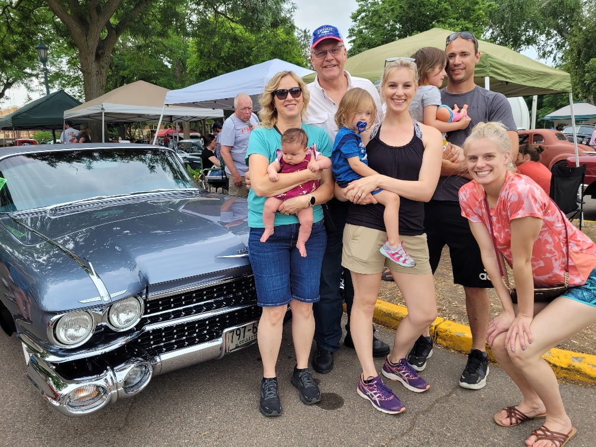
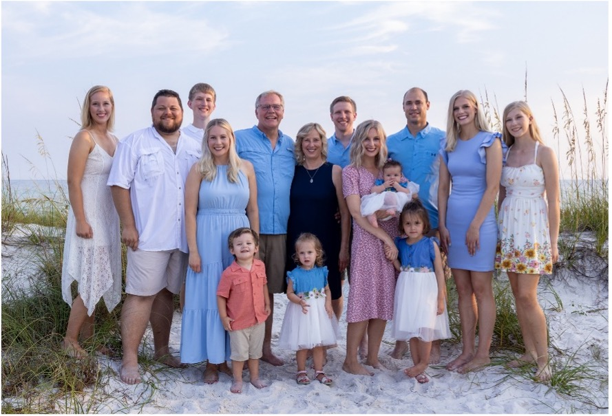
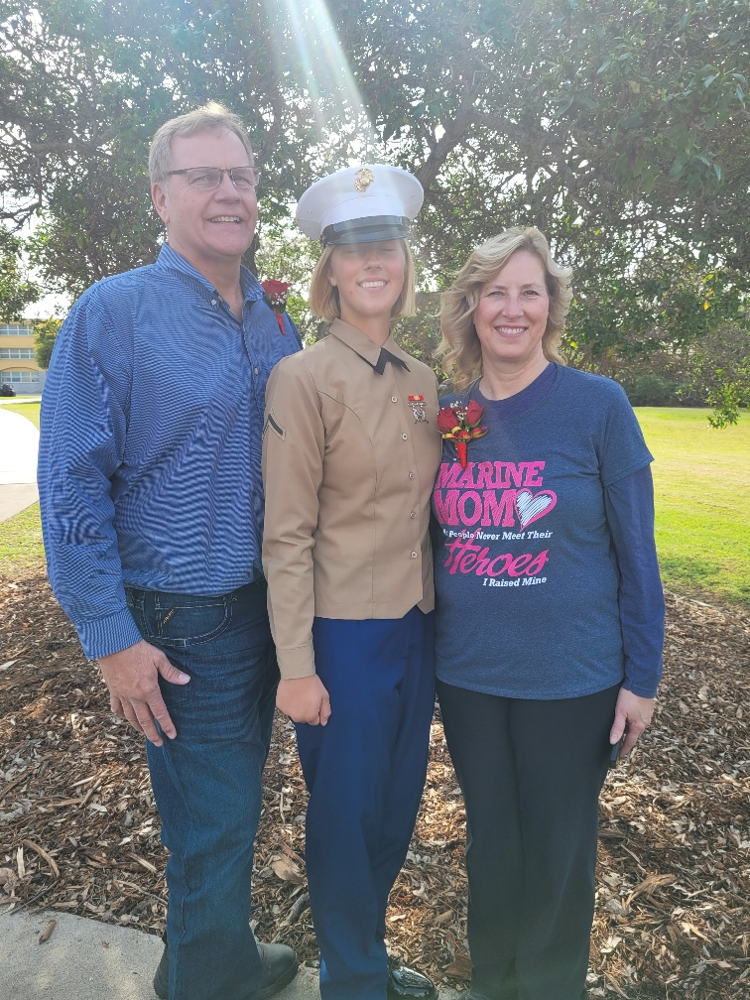

Statement
It has been a honor and a privilege to serve on the CoBank board the past four years. From
growing up on a family farm, custom harvesting, auditing cooperatives and becoming a
controller, to CFO and then CEO for several large cooperatives, I have built a well rounded
career in the business and agriculture industry. As a CoBank director, I strive to
constantly evaluate new opportunities and identify what will bring the greatest benefit and
value to CoBank patrons. With CoBank’s continued support, the development of our agriculture
and rural infrastructure, along with identifying potential sources for financial growth,
will be critical for our rural communities and businesses to be successful. I look forward
to the opportunity to continuing serving the local patrons and owners as a re-elected CoBank
director.

Faith & Morals
My faith in God and being a Christian holds immense importance for me. It serves as
my guiding light, helping me make correct, true, and moral decisions. In debates with
atheists, I’ve been asked whether one must be a Christian to make moral choices. My
response is that while it’s not a prerequisite, having God as a guiding compass certainly
makes the journey easier.
Family Values
I firmly believe in the strength of family bonds. According to my convictions, God has
placed us here to form families, raise children, and contribute to the growth of His
kingdom. As a man, I recognize my responsibility to protect and care for my wife and
kids. I strive to set a positive example for my children, teaching them right from wrong.

My Family
My wife, Kris, and I are celebrating 36 years of marriage this year. We reside in Seneca,
KS, and are blessed with seven children and four grandchildren. Each day, I express
gratitude for the opportunities this great nation has provided us.

Patriotism
Consider me a patriot. I am profoundly grateful to have been born in the U.S.A. I can’t
imagine a better place to love my wife and raise my kids. Our freedom is a precious gift,
and we owe a debt of gratitude to our founding fathers for creating this remarkable
country. Let us always remember our history and the values we stand for. God Bless the
USA.
Principal Occupation
Operations Lead: J-Six Enterprises, LLC a diversified farming,
milling and consolidated cattle and hog operation
Education
M.B.A.: Southwest Minnesota State University, Marshall, MN
B.S.: Minnesota State University, Mankato, MN
Certified Public Accountant (inactive)
Prior Work Experience
Director and Member of the Audit Committee: CoBank, ACB
Former Chief Executive Officer: Ag Partners Cooperative, Inc. an
agricultural cooperative
Former President and Chief Executive Officer: The Great Bend Cooperative
Association an agricultural cooperative
Former Chief Financial Officer: McBee Farms a family-owned farming
operation
Former Chief Operating Officer: Sioux Steel a grain bin
manufacturing company
Former Chief Executive Officer: Farmers Union Industries, LLC an
agricultural cooperative
Chief Financial Officer: Farmers Union Industries, LLC an
agricultural cooperative
Former Chief Financial Officer: Van Beek Natural Science, LLC a
feed ingredients manufacturer
Former Controller: AGCO Ag-Chem a farm equipment
manufacturer
Former Controller: Crystal Co-Operative an agricultural
cooperative
Former Auditor: Schuetzle, Carlson & Co. LLP an accounting
firm
Former Owner/Operator: Anderson Harvesting a custom harvesting
company
Former Director: Minnwest Bank a community bank
Accomplishments
Great Bend Cooperative Association
- 2-million-bushel grain facility
- Oversaw the hedging of the fuel business
- Achieved an acquisition in 2019
- Responsible for financial performance and growth of $150 million company and manage
140
employees
- Assisted with creating a mission, vision and values statement Responsible for all
banking
relationships
Farmers Union Industries
- Created a $6 million captive insurance company
- Made two business acquisitions valued at $45 million
- Grew net income by 50% in a 5-year period
- Responsible for banking relationships of a $280 million company
Civic Engagements
Grand Knight of Seneca KS Knights of Columbus